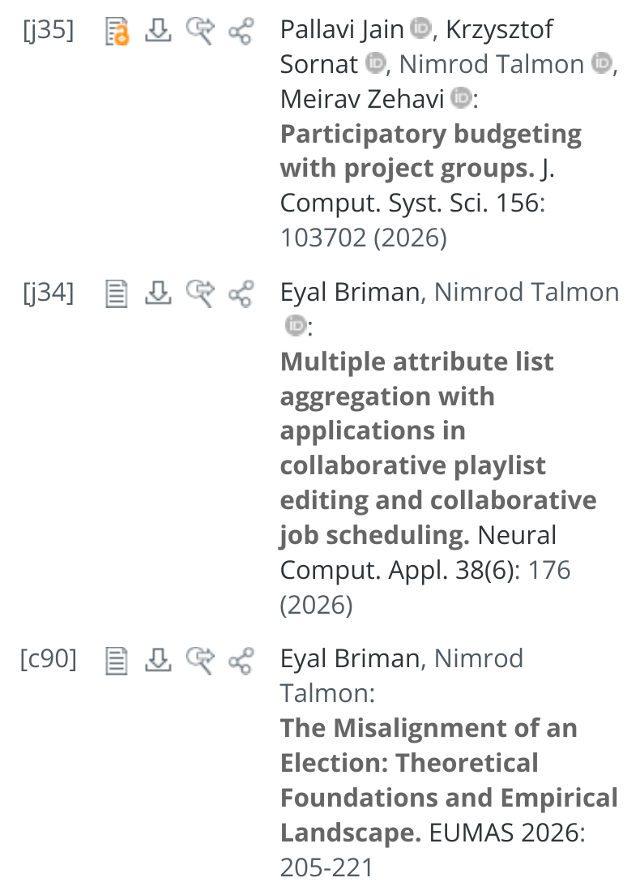
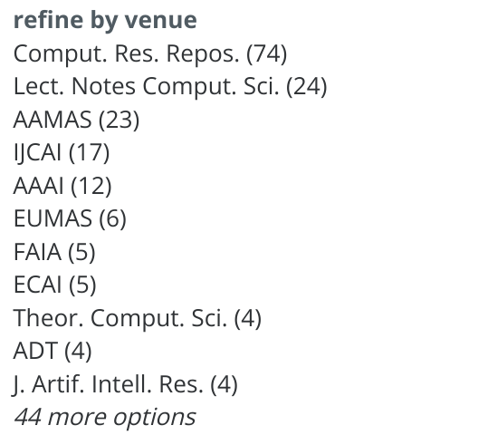
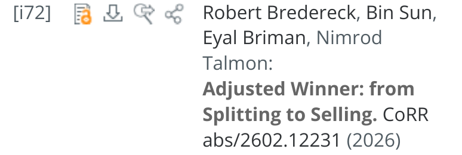
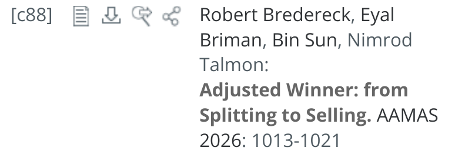

סטודיו למחקר · מפגש 3
מה זה מאמר, איפה מפרסמים, ואיך שופטים
פרופ' נמרוד טלמון · 9.12.2026 / 16.12.2026
מדע, מתמטיקה, הנדסה
קהילה ובמות
מאמר = טיעון
שיפוט עמיתים
קוראים, שופטים, כותבים
דוקטורט במדעי המחשב התיאורטיים
איך בני אדם וסוכני AI מגיעים יחד להחלטות קולקטיביות טובות
סבב
על מה אתם עובדים, או מה מעניין אתכם?
שאלה
מתמטיקה
הראיה: הוכחה
מדע
הראיה: ניסוי, תצפית, נתונים
Popper
הנדסה
הראיה: ביצועים ותועלת
Simon, The Sciences of the Artificial, 1969
חקר ביצועים תיאורטי
המאמר: משפט והוכחה
מחקר אמפירי והתנהגותי
המאמר: השערה, נתונים, מסקנה
תכנון מערכות
המאמר: מערכת, ניסוי, השוואה
דיון
(מותר יותר מאחד :)
ובונים עליה
Merton: ספקנות מאורגנת
ושוב :)
כל מאמר מתחיל ממה שכבר ידוע
ומוסיף צעד אחד
בתוך תחום קיים, עם כלים קיימים
וזה בדיוק מה שתזה עושה
Kuhn, 1962
שאלה
לא שפוט
מיידי. "תופס" את הרעיון
שיפוט קל
קהילה קטנה, הרבה משוב
שיפוט מלא, דדליין קבוע
במדעי המחשב: הבמה המרכזית
שיפוט מעמיק, כמה סבבים
הגרסה המלאה
(DBLP, אוקטובר 2026)
[j] ז׳ורנל [c] כנס [i] arXiv, לא שפוט200 רשומות, 74 מהן ב-arXiv


1 · arXiv

2 · AAMAS 2026

Grassroots Federation: קודם arXiv, אחר כך AAMAS 2026
Drawing a Map of Elections: ז׳ורנל Artificial Intelligence, 2025
אלגוריתמים להרמוניזציה שיתופית של מוזיקה
רשימות שיתופיות: פלייליסטים ושיבוץ משימות
כנס קטן וידידותי
Who Gets to Submit?
משוב ממומחים
שורה בקורות החיים
מלגות
נסיעה לכנס
קשרים
☕
ולכן כותבים אותו בשביל הקורא
שאלה
והוא עייף, ממהר, ולא בטוח שזה מעניין :)
מה אנחנו רוצים
שהקורא יבין, ויאמין
מה צריך
שיבין מהר
העיקר
השורה התחתונה, גם בלי להתרכז
כותרת
על מה זה?
תקציר
מה עשיתם, ומה יצא?
מבוא
למה זה חשוב, ומה חדש?
עבודות קודמות
מה כבר ידוע?
מודל / שיטה
איך?
תוצאות
מה יצא?
דיון
אז מה? ומה עוד לא?
מבוא: התמונה הגדולה
מודל ותוצאות: הפרטים
דיון: חזרה לתמונה הגדולה
העיקר קודם
אינטואיציה, ואז הפרטים
התחלה, אמצע וסוף (Aristotle)
שיהיה כיף
מתוך ה-House style של Digital Cooperation Lab
דוגמה · 10 דקות
Vaswani et al., 2017
קוראים רק: כותרת, תקציר, איור 1, טבלת התוצאות
מה הרעיון האחד?
הכותרת היא הטענה
תקציר: בעיה, רעיון, תוצאה
איור אחד שמסביר את המודל
טבלה אחת שמשכנעת
רעיון אחד פשוט, מוכר בצורה ברורה
שיפוט עמיתים, מבפנים
(האויב הוא גם אתם, בעוד שנה :)
בכנס: סבב אחד. בז׳ורנל: לרוב כמה סבבים
מה חדש פה?
זה בכלל נכון?
למה שיהיה לי אכפת?
הבנתי?
קורא תקציר, מבוא ואיורים, ומחליט מוקדם
לכן: העיקר ראשון
מודים
עונים נקודה-נקודה
לא מתווכחים עם הטון
קוראים, נושמים, מתקנים, ושולחים שוב :)
קריאה מודרכת · בזוגות · 35 דקות
Gale & Shapley, 1962
הפעם אתם השופטים
סיכום בשני משפטים
מה הטענה המרכזית?
מה הראיה?
שתי חוזקות
שתי חולשות
החלטה (קבלה / קבלה חלשה / דחייה חלשה / דחייה) ורמת ביטחון
“any argument which is carried out with sufficient precision is mathematical”
Gale & Shapley, 1962, Section 6
מסכימים?
דיון
ולמה כיף לקרוא אותו?
הבעיה בעולם
למה זה חשוב
מה חסר היום
מה אני עושה
מה נדע כשאסיים
קוראים לבן או לבת הזוג
משוב: איזה משפט לא הבנתי?
מאמר הוא טיעון שאחרים יכולים לבדוק
כותבים בשביל הקורא (והשופט): העיקר קודם
שולחים. יש במה לכל דבר
תודה :)